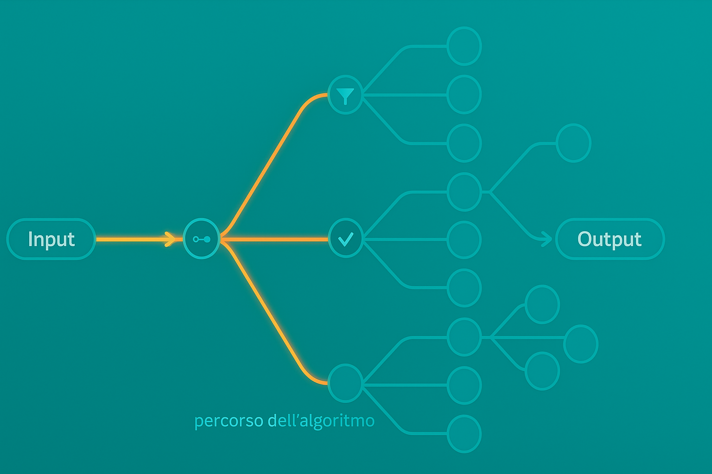
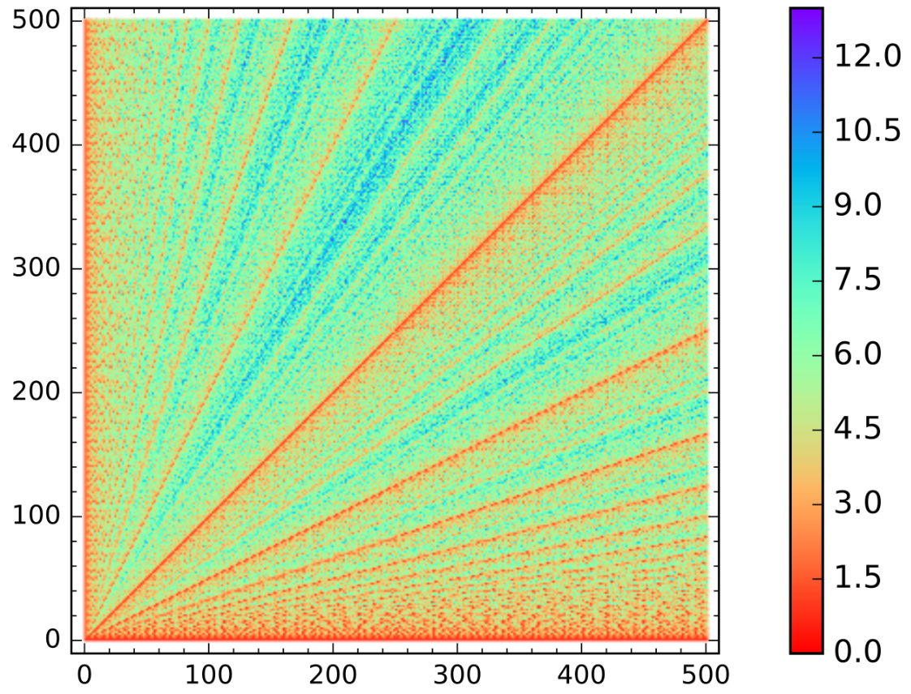

Obiettivo: distinguere problema, algoritmo, programma ed esecutore e riconoscere le proprietà di una procedura ben definita.
Problema → Analisi → Strategia → Algoritmo → Programma → Esecuzione.
L'algoritmo è la procedura generale che, ricevuta un'istanza valida, produce un risultato conforme alla specifica del problema.
Una ricetta descrive una procedura: riceve ingredienti e quantità come input e, attraverso una sequenza ordinata di azioni, produce un piatto come output.
Un'indicazione come “cuoci per un po'” è ambigua; “cuoci per 20 minuti a 180 °C” è più precisa e può essere eseguita in modo ripetibile.
Un algoritmo è una sequenza finita e ordinata di istruzioni non ambigue ed eseguibili che trasforma un input in un output.
Se un problema è descritto da (I, O, R), un algoritmo deve produrre, per ogni input valido i ∈ I, un output o ∈ O tale che (i,o) ∈ R.

Esistono anche algoritmi probabilistici; in questa fase del corso consideriamo algoritmi deterministici.
Schema fondamentale: input → elaborazione → output.
Dati due interi non negativi a e b, non entrambi nulli, il Massimo Comun Divisore è il più grande intero positivo che divide entrambi senza resto.
modSe b > 0, l'espressione a mod b restituisce il resto della divisione intera di a per b. Per esempio, 17 mod 5 = 2 perché 17 = 3 · 5 + 2.
a e b.b ≠ 0, calcola il resto r = a mod b, poi assegna a a il vecchio valore di b e a b il valore di r.b = 0, restituisci a.MCD(48,18)(a, b) = (48, 18) → 48 mod 18 = 12
(a, b) = (18, 12) → 18 mod 12 = 6
(a, b) = (12, 6) → 12 mod 6 = 0
(a, b) = ( 6, 0) → risultato: 6A ogni passo il MCD della coppia rimane invariato, mentre il secondo valore diminuisce fino a diventare zero.
# Input: interi a, b ≥ 0, non entrambi uguali a 0
# Output: MCD(a,b)
funzione MCD(a, b):
mentre b ≠ 0:
r ← a mod b
a ← b
b ← r
restituisci aLa correttezza descrive che cosa calcola l'algoritmo; la complessità misura quante risorse usa per calcolarlo.
Dopo l'eventuale prima iterazione possiamo considerare una coppia (a,b) con a ≥ b > 0. Il valore b non supera quindi il minore dei due input iniziali. Dopo due iterazioni otteniamo:
(a, b) → (b, r) → (r, s)
r = a mod b
s = b mod rr ≤ b/2, allora s < r ≤ b/2.r > b/2, nella divisione di b per r il quoziente è 1; quindi s = b − r < b/2.In entrambi i casi, dopo due iterazioni il nuovo secondo valore è minore della metà del precedente. Il numero di iterazioni cresce quindi in modo proporzionale a log(min(a,b)): la complessità temporale è O(log min(a,b)).
I numeri di Fibonacci formano la successione definita da F0 = 0, F1 = 1 e Fn = Fn-1 + Fn-2 per n ≥ 2: 0, 1, 1, 2, 3, 5, 8, .... Le sequenze più lente per l'algoritmo di Euclide si ottengono con coppie di numeri di Fibonacci consecutivi. Anche in quel caso il numero di iterazioni cresce come Θ(log min(a,b)).

Qual è la differenza tra algoritmo e programma? Quale ruolo svolge l'esecutore?